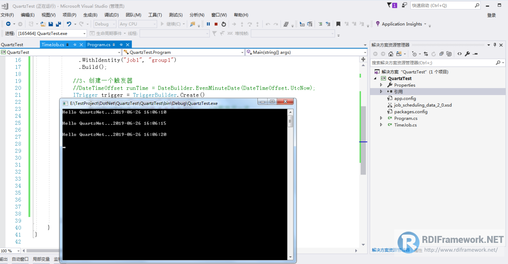

Quartz.NET是一个强大、开源、轻量的作业调度框架，你能够用它来为执行一个作业而创建简单的或复杂的作业调度。它有很多特征，如：数据库支持，集群，插件，支持cron-like表达式等等。非常适合在平时的工作中，定时轮询数据库同步，定时邮件通知，定时处理数据等。
Quartz.NET允许开发人员根据时间间隔（或天）来调度作业。它实现了作业和触发器的多对多关系，还能把多个作业与不同的触发器关联。整合了 Quartz.NET的应用程序可以重用来自不同事件的作业，还可以为一个事件组合多个作业。
官网：http://www.quartz-scheduler.net/
源码：https://github.com/quartznet/quartznet
示例：https://www.quartz-scheduler.net/documentation/quartz-3.x/quick-start.html
Quartz.NET是一个强大、开源、轻量的作业调度框架，是 OpenSymphony 的 Quartz API 的.NET移植，用C#改写，可用于winform和Web应用中。它灵活而不复杂,你能够用它来为执行一个作业而创建简单的或复杂的作业调度。Quartz.NET 3.0 已经开始支持 .NET Core/.NET Standard 2.0。
Job 为作业的接口，JobDetail 用来描述 Job 的实现类及其它相关的静态信息；Trigger 作为作业的定时管理工具，一个 Trigger 只能对应一个作业实例，而一个作业实例可对应多个 Trigger ；Scheduler 做为定时任务容器，它包含了所有触发器和作业，每个 Scheduler 都存有 JobDetail 和 Trigger
的注册，一个 Scheduler 中可以注册多个 JobDetail 和多个 Trigger 。
引入框架的方法非常简单你可以直接用nuget管理包也可以在项目中添加引用。为了满足不同客户的需求，本文以最简单的方式来讲解在Visual Studio中如何正确使用Quartz.NET。
创建一个新项目，可以是ASP.NET MVC、WebForms、Winforms、.NET Core等多种.Net项目，这里使用的是VS2017，创建了一个控制台应用项目。
要使用Quartz.NET我们需要安装Quartz.NET包，最简单的方式就是从Quartz.NET管网下载dll文件引用即可。本文我们使用Nuget进行dll文件的引用与管理。要使用Nuget必须确保已经安装过，最简单的方式是通过VS“工具”菜单查看是否有程序包管理控制台，如果有说明已经安装过，如下图所示。
如果没有找到那我们就要进行安装。
新版本的Visual Studio默认情况是安装了Nuget的，如Visual Studio 2015+，如果没有安装，打开VS菜单“工具”->"扩展与更新"。
在扩展与更新中搜索“nuget”，可以新安装或卸载后升级。
点击“工具”->"NuGet包管理器"->“程序包管理器控制台”
输入安装包的命令：
Install-Package Quartz安装结果如下：
时包管理器中就下载了需要的程序集与相关文件，同时程序中也添加了引用。
假定要实现每隔5秒钟向控制台记录当前时间。
因为这是一个控制台应用，我想一启动时就开始该项工作，这里我们需要将代码写在static void Main(string[] args)方法中。
定义一个类，实现Quartz.IJob接口，实现方法Execute，TimeJob.cs文件的代码如下：
using System;
using System.Threading.Tasks;
namespace QuartzTest
{
using Quartz;
public class TimeJob : IJob
{
/// <summary>
/// 作业调度定时执行的方法
/// </summary>
/// <param name="context"></param>
/// <returns></returns>
public async Task Execute(IJobExecutionContext context)
{
await Console.Out.WriteLineAsync("Hello QuartzNet..." + DateTime.Now + Environment.NewLine);
}
}
}调度器负责管理与控制任务的执行，在Main方法中添加如下代码：
//调度器
IScheduler scheduler;
//调度器工厂
ISchedulerFactory factory;
//创建一个调度器
factory = new StdSchedulerFactory();
scheduler = factory.GetScheduler();
scheduler.Start();这个任务对象就是我们将要执行的工作，job1是名称，group1是组名。
//2、创建一个任务
IJobDetail job = JobBuilder.Create
触发器定义了什么时间任务开始或每隔多久执行一次。
//3、创建一个触发器
//DateTimeOffset runTime = DateBuilder.EvenMinuteDate(DateTimeOffset.UtcNow);
ITrigger trigger = TriggerBuilder.Create()
.WithIdentity("trigger1", "group1")
.WithCronSchedule("0/5 * * * * ?") //5秒执行一次
.Build();//4、将任务与触发器添加到调度器中
scheduler.ScheduleJob(job, trigger);
//5、开始执行
scheduler.Start();
using Quartz;
using Quartz.Impl;
using System;
namespace QuartzTest
{
class Program
{
static void Main(string[] args)
{
//1、调度器
ISchedulerFactory sf = new StdSchedulerFactory();
IScheduler sched = sf.GetScheduler();
//2、创建一个任务
IJobDetail job = JobBuilder.Create<TimeJob>()
.WithIdentity("job1", "group1")
.Build();
//3、创建一个触发器
//DateTimeOffset runTime = DateBuilder.EvenMinuteDate(DateTimeOffset.UtcNow);
ITrigger trigger = TriggerBuilder.Create()
.WithIdentity("trigger1", "group1")
.WithCronSchedule("0/5 * * * * ?") //5秒执行一次
.Build();
sched.ScheduleJob(job, trigger);
//启动任务
sched.Start();
}
}
}Cron表达式是一个字符串，字符串以5或6个空格隔开，分为6或7个域，每一个域代表一个含义，Cron有如下两种语法格式：
（1） Seconds Minutes Hours DayofMonth Month DayofWeek Year
（2）Seconds Minutes Hours DayofMonth Month DayofWeek
结构
corn从左到右（用空格隔开）：秒 分 小时 月份中的日期 月份 星期中的日期 年份（可为空）
例 "0 0 12 ? * WED" 在每星期三下午12:00 执行（年份通常 省略）
Cron各字段的含义
通配符说明
星号(*)：可用在所有字段中，表示对应时间域的每一个时刻，例如， 在分钟字段时，表示“每分钟”；
问号(?)：该字符只在日期和星期字段中使用，它通常指定为“无意义的值”，相当于点位符；
减号(-)：表达一个范围，如在小时字段中使用“10-12”，则表示从10到12点，即10,11,12；
逗号(,)：表达一个列表值，如在星期字段中使用“MON,WED,FRI”，则表示星期一，星期三和星期五；
斜杠(/)：x/y表达一个等步长序列，x为起始值，y为增量步长值。如在分钟字段中使用0/15，则表示为0,15,30和45秒，而5/15在分钟字段中表示5,20,35,50，你也可以使用*/y，它等同于0/y；
L：该字符只在日期和星期字段中使用，代表“Last”的意思，但它在两个字段中意思不同。L在日期字段中，表示这个月份的最后一天，如一月的31号，非闰年二月的28号；如果L用在星期中，则表示星期六，等同于7。但是，如果L出现在星期字段里，而且在前面有一个数值X，则表示“这个月的最后X天”，例如，6L表示该月的最后星期五；
W：该字符只能出现在日期字段里，是对前导日期的修饰，表示离该日期最近的工作日。例如15W表示离该月15号最近的工作日，如果该月15号是星期六，则匹配14号星期五；如果15日是星期日，则匹配16号星期一；如果15号是星期二，那结果就是15号星期二。但必须注意关联的匹配日期不能够跨月，如你指定1W，如果1号是星期六，结果匹配的是3号星期一，而非上个月最后的那天。W字符串只能指定单一日期，而不能指定日期范围；
LW组合：在日期字段可以组合使用LW，它的意思是当月的最后一个工作日；
井号(#)：该字符只能在星期字段中使用，表示当月某个工作日。如6#3表示当月的第三个星期五(6表示星期五，#3表示当前的第三个)，而4#5表示当月的第五个星期三，假设当月没有第五个星期三，忽略不触发；
C：该字符只在日期和星期字段中使用，代表“Calendar”的意思。它的意思是计划所关联的日期，如果日期没有被关联，则相当于日历中所有日期。例如5C在日期字段中就相当于日历5日以后的第一天。1C在星期字段中相当于星期日后的第一天。
Cron表达式对特殊字符的大小写不敏感，对代表星期的缩写英文大小写也不敏感。
一些例子：
表示式 说明
0 0 12 * * ? 每天12点运行
0 15 10 ? * * 每天10:15运行
0 15 10 * * ? 每天10:15运行
0 15 10 * * ? * 每天10:15运行
0 15 10 * * ? 2008 在2008年的每天10：15运行
0 * 14 * * ? 每天14点到15点之间每分钟运行一次，开始于14:00，结束于14:59。
0 0/5 14 * * ? 每天14点到15点每5分钟运行一次，开始于14:00，结束于14:55。
0 0/5 14,18 * * ? 每天14点到15点每5分钟运行一次，此外每天18点到19点每5钟也运行一次。
0 0-5 14 * * ? 每天14:00点到14:05，每分钟运行一次。
0 10,44 14 ? 3 WED 3月每周三的14:10分到14:44，每分钟运行一次。
0 15 10 ? * MON-FRI 每周一，二，三，四，五的10:15分运行。
0 15 10 15 * ? 每月15日10:15分运行。
0 15 10 L * ? 每月最后一天10:15分运行。
0 15 10 ? * 6L 每月最后一个星期五10:15分运行。
0 15 10 ? * 6L 2007-2009 在2007,2008,2009年每个月的最后一个星期五的10:15分运行。
0 15 10 ? * 6#3 每月第三个星期五的10:15分运行。
注意：
（1）有些子表达式能包含一些范围或列表
例如：子表达式（天（星期））可以为 “MON-FRI”，“MON，WED，FRI”，“MON-WED,SAT”
“*”字符代表所有可能的值
因此，“”在子表达式（月）里表示每个月的含义，“”在子表达式（天（星期））表示星期的每一天
“/”字符用来指定数值的增量
例如：在子表达式（分钟）里的“0/15”表示从第0分钟开始，每15分钟
在子表达式（分钟）里的“3/20”表示从第3分钟开始，每20分钟（它和“3，23，43”）的含义一样
“？”字符仅被用于天（月）和天（星期）两个子表达式，表示不指定值
当2个子表达式其中之一被指定了值以后，为了避免冲突，需要将另一个子表达式的值设为“？”
“L” 字符仅被用于天（月）和天（星期）两个子表达式，它是单词“last”的缩写
但是它在两个子表达式里的含义是不同的。
在天（月）子表达式中，“L”表示一个月的最后一天
在天（星期）自表达式中，“L”表示一个星期的最后一天，也就是SAT
如果在“L”前有具体的内容，它就具有其他的含义了
例如：“6L”表示这个月的倒数第６天，“FRIL”表示这个月的最一个星期五
注意：在使用“L”参数时，不要指定列表或范围，因为这会导致问题
表达式生成器
有很多的cron表达式在线生成器，这里给大家推荐几款
http://www.pdtools.net/tools/becron.jsp
或者
一路走来数个年头，感谢RDIFramework.NET框架的支持者与使用者，大家可以通过下面的地址了解详情。
RDIFramework.NET官方网站：http://www.rdiframework.net/
RDIFramework.NET官方博客：http://blog.rdiframework.net/
同时需要说明的，以后的所有技术文章以官方网站为准，欢迎大家收藏！
RDIFramework.NET框架由专业团队长期打造、一直在更新、一直在升级，请放心使用！
欢迎关注RDIFramework.net框架官方公众微信（微信号：guosisoft），及时了解最新动态。
扫描二维码立即关注